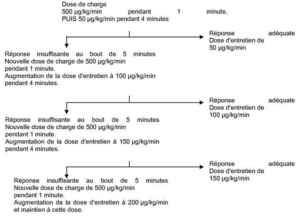

RÉSUMÉ DES CARACTÉRISTIQUES DU PRODUIT
ANSM - Mis à jour le : 06/02/2013
BREVIBLOC 10 mg/ml, solution pour perfusion
2. COMPOSITION QUALITATIVE ET QUANTITATIVE
Chlorhydrate d'esmolol ....................................................................................................................... 10 mg
Pour 1 ml de solution pour perfusion.
pH = 4,5 à 5,5
Pour la liste complète des excipients, voir rubrique 6.1.
Solution pour perfusion.
4.1. Indications thérapeutiques
· en cas de tachycardie supraventiculaire (hors cas de syndromes de pré-excitation).
· en période péri et post-opératoire chez des patients présentant une fibrillation ou un flutter auriculaire afin d'obtenir un contrôle rapide de la fréquence ventriculaire.
· et dans toute autre situation pour laquelle un contrôle à court terme de la fréquence ventriculaire par un produit de courte durée d'action est nécessaire.
Brévibloc est également indiqué en cas de tachycardie et d'hypertension artérielle en période péri-opératoire et en cas de tachycardie sinusale non compensatoire, si le médecin considère que l'accélération du rythme cardiaque doit être traitée.
Brévibloc n'est pas indiqué pour une utilisation chronique.
4.2. Posologie et mode d'administration
Tachyarythmie supraventriculaire
La posologie de Brévibloc en cas de tachyarythmie supraventriculaire doit être adaptée à chaque patient. Chaque palier est constitué d’une dose de charge suivie d’une dose d’entretien. La dose d’entretien efficace est comprise entre 50 et 200 microgrammes/kg/minute, bien que des doses comprises entre 25 et 300 microgrammes/kg/minute aient été utilisées.
Schéma posologique pour l’initiation et l’entretien du traitement

Le volume et la quantité de Brévibloc à administrer selon le poids du patient et les doses d'entretien sont définis au tableau 1.
|
Tableau 1 : tableau de posologie pour l'administration de doses de charge et d'entretien |
|
|
|
||||||
|
|
Volume et quantité d'esmolol requis pour une |
|
|||||||
|
DOSE INITIALE |
Volume et quantité d'esmolol requis pour différentes |
||||||||
|
DE CHARGE |
DOSES D'ENTRETIEN |
||||||||
|
de 500 microgrammes/kg |
à des débits de perfusion compris entre 25 et 300 microgrammes/kg/minute |
||||||||
|
en 1 minute |
(volume en ml par minute) |
||||||||
|
Poids du |
|
|
DEBIT |
||||||
|
patient |
Volume |
Quantité |
25 |
50 |
100 |
150 |
200 |
300 |
|
|
(kg) |
(ml) |
(mg) |
µg/kg/min |
µg/kg/min |
µg/kg/min |
µg/kg/min |
µg/kg/min |
µg/kg/min |
|
|
|
|
|
|
|
|
|
|
|
|
|
|
|
|
QUANTITE A ADMINISTRER PAR MINUTE |
||||||
|
40 |
2 |
20 |
0,1 ml/min |
0,2 ml/min |
0,4 ml/min |
0,6 ml/min |
0,8 ml/min |
1,2 ml/min |
|
|
50 |
2,5 |
25 |
0,125 ml/min |
0,25 ml/min |
0,5 ml/min |
0,75 ml/min |
1 ml/min |
1,5 ml/min |
|
|
60 |
3 |
30 |
0,15 ml/min |
0,3 ml/min |
0,6 ml/min |
0,9 ml/min |
1,2 ml/min |
1,8 ml/min |
|
|
70 |
3,5 |
35 |
0,175 ml/min |
0,35 ml/min |
0,7 ml/min |
1,05 ml/min |
1,4 ml/min |
2,1 ml/min |
|
|
80 |
4 |
40 |
0,2 ml/min |
0,4 ml/min |
0,8 ml/min |
1,2 ml/min |
1,6 ml/min |
2,4 ml/min |
|
|
90 |
4,5 |
45 |
0,225 ml/min |
0,45 ml/min |
0,9 ml/min |
1,35 ml/min |
1,8 ml/min |
2,7 ml/min |
|
|
100 |
5 |
50 |
0,25 ml/min |
0,5 ml/min |
1 ml/min |
1,5 ml/min |
2 ml/min |
3 ml/min |
|
|
110 |
5,5 |
55 |
0,275 ml/min |
0,55 ml/min |
1,1 ml/min |
1,65 ml/min |
2,2 ml/min |
3,3 ml/min |
|
|
120 |
6 |
60 |
0,3 ml/min |
0,6 ml/min |
1,2 ml/min |
1,8 ml/min |
2,4 ml/min |
3,6 ml/min |
|
1 ml de Brévibloc correspond à 10 mg d’esmolol.
Dès que la fréquence cardiaque souhaitée ou le seuil de tolérance (ex. : pression artérielle diminuée) est atteint, supprimer la dose de charge suivante et diminuer la dose d'entretien de 50 microgrammes/kg/min à 25 µg/kg/min voire moins. Si nécessaire, augmenter, le temps entre les paliers d’ajustement de la dose en passant de 5 à 10 minutes.
NB: Aucun bénéfice supplémentaire n'a été observé pour des doses d'entretien dépassant 200 microgrammes/kg/min. De plus, la tolérance des doses supérieures à 300 microgrammes/kg/min n'a fait l'objet d'aucune étude.
Posologie une fois l’effet thérapeutique souhaité ou le seuil critique de sécurité atteint
Dès que l’effet thérapeutique souhaité ou le seuil critique de sécurité est atteint (ex. baisse de la pression artérielle), ne plus faire de dose de charge et réduire la perfusion par incréments à 12,5 -25 microgrammes/kg/minute.
Si besoin, l’intervalle entre les paliers peut également être augmenté de 5 à 10 minutes.
Le traitement par Brévibloc doit être interrompu lorsque la fréquence cardiaque ou la pression artérielle approchent rapidement ou dépassent une limite de sécurité, puis repris sans dose de charge à une dose inférieure dès que la fréquence cardiaque ou la pression artérielle sont revenues à un niveau acceptable.
Effets potentiels à connaitre durant l’ajustement posologique de Brévibloc
En cas de survenue d’un effet indésirable, la posologie de Brévibloc peut être réduite ou son administration interrompue. Les effets pharmacologiques indésirables devraient disparaître dans un délai de 30 minutes.
En cas de réaction locale au niveau du site de perfusion, il convient d’utiliser un autre site de perfusion et de veiller à éviter l’extravasation.
L’administration de Brévibloc sur une période supérieure à 24 heures n’a pas fait l’objet d’une évaluation approfondie. Les durées de perfusion supérieures à 24 heures doivent être utilisées avec précaution.
Il est conseillé d’arrêter la perfusion progressivement en raison du risque de rebond de la tachycardie et de l’hypertension. Les effets rebonds ne pouvant être exclus, comme avec tous les bêta-bloquants, il convient de faire preuve de prudence en cas d'arrêt brusque de l’administration de Brévibloc chez des patients coronariens.
Tachycardie et hypertension en période péri-opératoire
Pour les tachycardies et l’hypertension artérielle en période péri-opératoire, les schémas posologiques peuvent varier comme suit :
Pour un traitement per-opératoire, pendant l'anesthésie, quand un contrôle immédiat est nécessaire :
· injection IV d’une dose de charge sous forme d'un bolus de 80 mg en 15 à 30 secondes , suivie d’une perfusion de 150 microgrammes/kg/mn, qui peut être augmentée jusqu'à 300 microgrammes/kg/mn. Voir le tableau 1 pour le volume à perfuser en fonction du poids des patients.
Lors du réveil anesthésique
· perfusion d’une dose de 500 microgrammes/kg/mn pendant 4 minutes suivie d’une perfusion à la dose de 300 microgrammes/kg/mn.
En période post-opératoire, quand une augmentation progressive de la posologie est possible
· injection I.V. d'une dose de charge de 500 microgrammes/kg/mn en 1 minute au début de chaque palier afin d'obtenir une action rapide, puis utiliser une dose d’entretien progressive de 50, 100, 150, 200, 250 et 300 microgrammes/kg/min pendant 4 minutes jusqu'à obtention de l’effet thérapeutique recherché. Voir le tableau 1 pour le volume à perfuser en fonction du poids du patient.
Remplacement de Brévibloc par d’autres médicaments
Dès que la fréquence cardiaque souhaitée et qu’un état clinique stable sont atteints chez le patient , le relais par d’autres médicaments (ex. antiarythmiques ou inhibiteurs calciques) peut être envisagé.
Réduction de la posologie :
Lorsque Brévibloc doit être remplacé par d’autres médicaments, le médecin devra attentivement se référer aux instructions sur l’étiquetage du produit choisi et réduire la posologie de Brévibloc comme suit:
· Dans la première heure suivant l’administration de la première dose de l’autre médicament, réduire de moitié (50 %) le débit de perfusion de Brévibloc.
· Après l’administration de la deuxième dose de l’autre médicament, surveiller la réponse obtenue chez le patient. Si la fréquence cardiaque est maintenue constante pendant la première heure, arrêter la perfusion de Brévibloc.
Populations particulières
Sujets âgés
Les sujets âgés doivent être traités avec précaution, en débutant avec une posologie plus faible.
Aucune étude n’a été réalisée spécifiquement chez le sujet âgé. Néanmoins, l’analyse des données recueillies chez 252 patients de plus de 65 ans n’a pas mis en évidence de modification des effets pharmacodynamiques en comparaison avec des patients de moins de 65 ans.
Patients souffrant d’insuffisance rénale
Chez les insuffisants rénaux, il conviendra de faire preuve de prudence lors de l’administration de Brévibloc par perfusion, en raison de l’élimination rénale du métabolite acide inchangé de Brévibloc. L’élimination du métabolite acide est considérablement réduite chez les patients atteints de maladie rénale en stade terminal, la demi-vie d’élimination étant décuplée par rapport à la normale et les concentrations plasmatiques étant considérablement augmentées.
Patients souffrant d’insuffisance hépatique
En cas d'insuffisance hépatique, aucune précaution particulière n'est nécessaire en raison du rôle majeur joué par les estérases plasmatiques dans le métabolisme de Brévibloc.
Population pédiatrique
La sécurité et l’efficacité de Brévibloc chez les patients de moins de 18 ans n’ont pas encore été établies. Les données actuellement disponibles sont décrites aux rubriques 5.1 et 5.2 mais aucune recommandation posologique ne peut être émise.
· Bradycardie sinusale sévère (moins de 50 battements par minute) ;
· Maladie du sinus, troubles graves de la conduction auriculo-ventriculaire (sans stimulateur cardiaque), blocs auriculo-ventriculaires du second et troisième degré ;
· Choc cardiogénique ;
· Hypotension sévère ;
· Insuffisance cardiaque décompensée ;
· Phéochromocytome non traité ;
· Hypertension pulmonaire ;
· Crise d’asthme aiguë ;
· Acidose métabolique.
4.4. Mises en garde spéciales et précautions d'emploi
Une surveillance constante de la pression artérielle et de l'ECG est recommandée chez tous les patients traités avec Brévibloc.
Brévibloc doit être utilisé avec prudence pour le contrôle de la réponse ventriculaire chez les patients souffrant d’arythmies supraventriculaires en cas d’instabilité hémodynamique ou d’administration concomitante d’autres médicaments réduisant toutes les fonctions suivantes ou certaines d’entre elles : résistance périphérique, remplissage myocardique, contractilité myocardique ou propagation de l’impulsion électrique dans le myocarde. Malgré la rapidité du début et de l'arrêt des effets de Brévibloc, des réactions graves peuvent survenir, notamment une perte de conscience, un choc cardiogénique, un arrêt cardiaque. Plusieurs cas de décès ont été rapportés chez des patients aux situations cliniques complexes pour lesquels Brévibloc avait été utilisé pour contrôler la fréquence ventriculaire.
L’effet indésirable le plus fréquemment observé est l’hypotension, qui est liée à la posologie mais peut apparaître à n'importe quelle dose. Elle peut être grave. L'hypotension est généralement rapidement réversible. En cas d'épisode hypotensif, le débit de la perfusion devra être ralenti et, si nécessaire, interrompu.
L'hypotension disparaît généralement dans les 30 minutes suivant l'arrêt de l'administration de Brévibloc. Dans certains cas, d'autres mesures peuvent être nécessaires. Chez les patients ayant une pression artérielle systolique basse, une attention particulière sera portée pendant l’ajustement de la posologie et pendant la perfusion d’entretien.
Des cas de bradycardie, y compris de bradycardie grave, et d'arrêt cardiaque ont été observés lors de l'utilisation de Brévibloc. Il convient de faire preuve d'une prudence particulière lors de l'administration de Brévibloc chez des patients présentant un rythme cardiaque lent avant le traitement et de s'assurer que ses avantages potentiels sont supérieurs aux risques encourus.
Brévibloc est contre-indiqué chez les patients déjà atteints de bradycardie sinusale grave (voir rubrique 4.3). Si la fréquence cardiaque devient inférieure à 50-55 battements par minute au repos et si le patient présente des symptômes liés à la bradycardie, la posologie doit être réduite ou l'administration interrompue.
Une stimulation sympathique est nécessaire pour maintenir la fonction circulatoire en cas d’insuffisance cardiaque congestive. L’action des bêta-bloquants risque de réduire davantage la contractilité myocardique et d’aggraver l’insuffisance cardiaque. Une dépression continue du myocarde par des bêta-bloquants pendant une certaine période de temps peut parfois entraîner une insuffisance cardiaque.
Au premier signe ou symptôme d’insuffisance cardiaque, il conviendra d’interrompre le traitement de Brévibloc. Bien que l’interruption du traitement puisse être suffisante en raison de la courte demi-vie d’élimination de Brévibloc, un traitement spécifique peut également être envisagé (voir rubrique 4.9). Bien que l'administration à long terme de bêta-bloquants par voie orale à des doses tolérées par le patient s'inscrive dans le cadre du traitement de l'insuffisance cardiaque congestive, il convient de faire preuve de prudence lors de l'utilisation de Brévibloc chez des patients dont la fonction cardiaque est altérée (voir rubrique 4.3).
En raison de leur effet négatif sur le temps de conduction, les bêta-bloquants doivent uniquement être administrés avec prudence aux patients présentant un bloc cardiaque du premier degré ou d'autres troubles de la conduction cardiaque (voir rubrique 4.3).
Brévibloc doit être utilisé avec prudence et uniquement après un pré-traitement à l'aide d'alpha-bloquants chez des patients atteints de phéochromocytome (voir rubrique 4.3).
Brévibloc doit être utilisé avec prudence chez les patients traités pour une hypertension, lorsque la hausse de la pression artérielle est essentiellement due à une vasoconstriction associée à une hypothermie.
Les patients atteints d’une maladie bronchospastique ne doivent généralement pas recevoir de bêta-bloquants. En raison de sa sélectivité bêta-1 relative et de la possibilité d’adaptation de la posologie, Brévibloc devra être utilisé avec prudence chez les patients atteints de maladies bronchospastiques. Néanmoins, la sélectivité bêta-1 n’étant pas absolue, la dose de Brévibloc doit être ajustée avec prudence pour obtenir la plus faible dose efficace possible. En présence d’un bronchospasme, la perfusion doit être interrompue immédiatement et un agoniste bêta-2 doit être administré si nécessaire.
Chez un patient déjà traité par un bêta-2 agoniste, il peut être nécessaire d'en revoir la dose.
Brévibloc devra être utilisé avec prudence chez les patients présentant des antécédents de respiration sifflante ou d’asthme.
Précautions d'emploi
Brévibloc devra être utilisé avec prudence chez les diabétiques et en cas d’hypoglycémie avérée ou soupçonnée. Les bêta-bloquants peuvent masquer les symptômes annonciateurs d'une hypoglycémie tels qu'une tachycardie Cependant les vertiges et les sueurs ne sont pas significativement perturbés. L’administration concomitante de bêta-bloquants et d'antidiabétiques peut accroître les effets de ces derniers (baisse de la glycémie) (voir rubrique 4.5).
Des réactions au niveau du site de perfusion ont été observées lors de l'utilisation de Brévibloc 10 mg/ml et 20 mg/ml, notamment irritation et inflammation au site de perfusion, ainsi que des réactions plus graves telles que thrombophlébite, nécrose et vésication, en particulier en cas d'association avec une extravasation (voir rubrique 4.8). Des perfusions dans des petites veines ou avec des aiguilles à ailettes doivent être évitées. En cas de réaction cutanée au niveau du site de perfusion, un autre site d'injection sera utilisé.
Les bêta-bloquants peuvent augmenter le nombre et la durée des crises d’angor chez les patients atteints d’angor de Prinzmetal en raison de la vasoconstriction de l’artère coronaire provoquée par les récepteurs alpha non inhibés.
Chez les patients hypovolémiques, Brévibloc peut atténuer la tachycardie réflexe et augmenter le risque d'hypotension. Brévibloc doit donc être utilisé avec prudence chez ces patients.
Chez les patients atteints de troubles circulatoires périphériques (syndrome ou maladie de Raynaud, claudication intermittente), les bêta-bloquants doivent être utilisés avec une grande prudence car ils peuvent aggraver ces troubles.
Les bêta-bloquants, y compris Brévibloc, ont été associés à une augmentation du taux de potassium sérique et à une hyperkaliémie. Ce risque est augmenté chez les patients présentant des facteurs de risque tels qu'une atteinte de la fonction rénale. Il a été rapporté que l'administration intraveineuse de bêta-bloquants a entraîné une hyperkaliémie mettant en jeu le pronostic vital chez des patients sous hémodialyse.
Les bêta-bloquants peuvent augmenter la sensibilité aux allergènes et la gravité des réactions anaphylactiques. Il est possible que des patients sous bêta-bloquants ne répondent pas aux doses habituelles d'adrénaline utilisées pour traiter les réactions anaphylactiques ou anaphylactoïdes (voir rubrique 4.5).
Les bêta-bloquants ont été associés au développement de psoriasis ou d'éruptions psoriasiformes et à l'aggravation du psoriasis. Chez les patients présentant des antécédents familiaux ou personnels de psoriasis, les bêta-bloquants ne doivent être administrés qu'après une évaluation attentive des avantages potentiels et des risques.
Les bêta-bloquants, tels que le propranolol et le métoprolol, peuvent masquer certains signes cliniques d'hyperthyroïdie (tels que la tachycardie). L'interruption soudaine d'un traitement par bêta-bloquants chez des patients à risque ou présentant une suspicion de thyrotoxicose peut précipiter une crise thyroïdienne aiguë. Ces patients doivent donc faire l'objet d'un suivi attentif.
Ce médicament contient environ 30,45 mmol (ou 700 mg) de sodium par poche. Il convient d'en tenir compte chez les patients qui suivent un régime pauvre en sodium.
4.5. Interactions avec d'autres médicaments et autres formes d'interactions
+ Antagoniste du calcium (bépridil, diltiazem et vérapamil) en cas d'altération de la fonction ventriculaire gauche
Troubles de l'automatisme (bradycardie excessive, arrêt sinusal), troubles de la conduction sino-auriculaire et auriculo-ventriculaire et défaillance cardiaque (synergie des effets).
Associations faisant l'objet de précautions d’emploi
+ Amiodarone
Trouble de la contractilité, de l'automatisme et de la conduction (suppression des mécanismes sympathiques compensateurs). Surveillance clinique et ECG.
+ Antagoniste du calcium (bépridil, diltiazem et vérapamil) si la fonction ventriculaire gauche est normale
Troubles de l'automatisme (bradycardie excessive, arrêt sinusal), troubles de la conduction sino-auriculaire et auriculo-ventriculaire et défaillance cardiaque (synergie des effets).
Surveillance clinique et ECG.
+ Antiarythmiques (propafénone et antiarythmiques de classe Ia: quinidine, hydroquinidine, disopyramide)
Troubles de la contractilité, de l'automatisme et de la conduction (suppression des mécanismes sympathiques compensateurs).
Surveillance clinique et électrocardiographique.
+ Baclofène
Majoration de l'effet antihypertenseur.
Surveillance de la pression artérielle et adaptation posologique de l'antihypertenseur si nécessaire.
Associations à prendre en compte
+ Amifostine
Majoration de l'effet antihypertenseur.
+ Antidépresseurs imipraminiques, neuroleptiques
Effet antihypertenseur et risque d'hypotension orthostatique majorés (effet additif).
+ Alphabloquants à visée urologique: alfuzosine, prazosine, térazosine, tamsulosine.
Majoration de l'effet hypotenseur. Risque d'hypotension orthostatique majoré.
Il n'existe pas suffisamment de données sur l'utilisation d'esmolol pendant la grossesse pour pouvoir déterminer les effets nocifs possibles.
A ce jour, aucune donnée n'est disponible sur une majoration des anomalies congénitales chez l'homme.
Les études chez l'animal ont montré des effets toxiques sur la reproduction (voir paragraphe 5.3). Le risque potentiel chez l'homme n'est pas connu. En cas de prise en fin de grossesse et compte tenu des propriétés pharmacologiques de l'esmolol, des effets secondaires, plus particulièrement une hypoglycémie, une hypotension et une bradycardie peuvent survenir chez le fœtus et les nouveau-nés.
Les bêta-bloquants diminuent la circulation sanguine dans le placenta.
L'utilisation d'esmolol n'est pas recommandée pendant la grossesse.
Si le traitement par esmolol est jugé nécessaire, il convient de surveiller le flux sanguin utéro-placentaire et la croissance du fœtus. Le nouveau-né devra faire l'objet d'une surveillance accrue.
Allaitement
L'excrétion de l'esmolol dans le lait maternel n'est pas connue.
L'allaitement n'est pas recommandé pendant l'utilisation d'esmolol.
Fécondité
Aucune étude n'a été publiée sur les effets de l'esmolol sur la fertilité.
4.7. Effets sur l'aptitude à conduire des véhicules et à utiliser des machines
Sans objet.
La plupart des effets indésirables observés ont été légers et transitoires. L’effet indésirable le plus important a été l’hypotension. Les effets indésirables suivants sont classés en fonction des classes de systèmes d’organes de la base de données MedDRA et de leur fréquence.
Remarque : la fréquence de la survenue des événements indésirables est classée comme suit :
· Très fréquent (≥ 1/10)
· Fréquent (≥ 1/100, < 1/10)
· Peu fréquent (≥ 1/1 000, < 1/100)
· Très rare (< 1/10 000)
· Indéterminée (ne peut être estimée sur la base des données disponibles)
|
Classe de systèmes d’organes
|
Fréquence |
||||
|
Très fréquent |
Fréquent |
Peu fréquent |
Très rare |
Fréquence indéterminée |
|
|
Troubles du métabolisme et de la nutrition |
|
Anorexie |
|
|
Hyperkaliémie |
|
Acidose métabolique |
|||||
|
Affections psychiatriques |
|
Dépression |
Pensées anormales |
|
|
|
Anxiété |
Irritabilité |
||||
|
Affections du système nerveux |
|
Somnolence |
Syncope |
|
|
|
Céphalées |
Convulsions |
||||
|
Paresthésies |
Troubles de la parole |
||||
|
Troubles de l’attention |
|
||||
|
Etat de confusion |
|
||||
|
Agitation |
|
||||
|
Affections oculaires |
|
|
Troubles de la vision |
|
|
|
Affections cardiaques |
|
Vertiges1 |
Douleurs thoraciques |
Arrêt sinusal |
Rythme idioventriculaire accéléré |
|
Bradycardie |
Asystole |
Artériospasme coronaire |
|||
|
Bloc auriculo-ventriculaire |
|
Arrêt cardiaque. |
|||
|
Hausse de la pression artérielle pulmonaire |
|
|
|||
|
Défaillance cardiaque |
|
|
|||
|
Extrasystoles ventriculaires |
|
|
|||
|
Rythme nodal |
|
|
|||
|
Angine de poitrine |
|
|
|||
|
Affections vasculaires |
Hypotension |
|
Ischémie périphérique |
Thrombophlébite2 |
|
|
Pâleur |
|||||
|
Bouffée congestive |
|||||
|
Affections respiratoires, thoraciques et médiastinales |
|
|
Dyspnée |
|
|
|
Œdème pulmonaire |
|||||
|
Bronchospasme |
|||||
|
Respiration sifflante |
|||||
|
Congestion nasale |
|||||
|
Rhonchus |
|||||
|
Râles |
|||||
|
Affections gastro-intestinales |
|
Nausées |
Dysgueusie |
|
|
|
Vomissements |
Dyspepsie |
||||
|
|
Constipation |
||||
|
|
Bouche sèche |
||||
|
|
Douleur abdominale |
||||
|
Affections de la peau et du tissu sous-cutané |
Diaphorèse1 |
|
Décoloration de la peau2 |
Nécrose cutanée (due à l’extra-vasation)2 |
Psoriasis3 |
|
Erythème2 |
Angioœdème |
||||
|
|
Urticaire |
||||
|
Affections musculo-squelettiques et systémiques |
|
|
Douleur musculo-squelettique 4 |
|
Faiblesse musculaire |
|
Affections du rein et des voies urinaires |
|
|
Rétention urinaire |
|
|
|
Troubles généraux et anomalies au site d’administration |
|
Asthénie |
Frissons |
|
Phlébite au niveau du site de perfusion |
|
Fatigue |
Fièvre |
Vésicules au site de perfusion |
|||
|
Réaction au site d’injection |
Œdème2 |
Vésication 2 |
|||
|
Réaction au site de perfusion |
Douleur2 |
|
|||
|
Inflammation au site de perfusion |
Brûlure au site de perfusion |
|
|||
|
Induration au site de perfusion |
Ecchymose au site de perfusion |
|
|||
1 Les vertiges et la diaphorèse sont associés à une hypotension symptomatique.
2 En association avec des réactions au niveau du site d’injection et de perfusion.
3 Les médicaments bêta-bloquants par effet classe peuvent parfois déclencher ou aggraver le psoriasis.
4 Y compris douleur mi-scapulaire et chondrite costale.
Des cas de surdosages accidentels importants d'esmolol ont été rapportés. Certains de ces surdosages ont été mortels, d'autres ont entraîné une invalidité permanente. Des injections en bolus de 625 mg jusqu'à 2,5 g (12,5 - 50 mg/kg) se sont avérées mortelles.
Symptômes:
En cas de surdosage, les symptômes suivants peuvent survenir: hypotension sévère, bradycardie sinusale, bloc auriculo-ventriculaire, insuffisance cardiaque, choc cardiogénique, arrêt cardiaque, bronchospasmes, insuffisance respiratoire, inconscience pouvant aller jusqu'au coma, convulsions, nausées, vomissements, hypoglycémie et hyperkaliémie.
Traitement
En cas de surdosage, arrêter immédiatement le traitement et commencer le traitement adéquat.
En plus des mesures générales, une surveillance des fonctions vitales sera instaurée; une correction de ces fonctions vitales sous contrôle médical intensif peut s'avérer nécessaire.
En raison de la courte demi-vie d'élimination de l'esmolol (environ 9 minutes), en cas d'apparition d'effets indésirables, la première mesure à prendre est l'arrêt de la perfusion.
Les symptômes sont supposés disparaitre dans les 45 premières minutes après l'interruption du traitement. Un recours à la respiration artificielle peut s'avérer nécessaire.
En cas de bradycardie : Administration intraveineuse d'atropine, d’isopréaline ou d'autres agents anticholinergiques. Si le traitement est insuffisant pour traiter la bradycardie, l'implantation d'un pace-maker peut s'avérer nécessaire.
En cas de bronchospasmes : Dans les cas de bronchospasmes, administrer des sympathomimétiques beta 2 en aérosol. En cas de réponse insuffisante, des sympathomimétiques bêta 2 peuvent être administrés par voie intra-veineuse.
En cas d’hypotension : un remplissage vasculaire approprié doit être effectué.
En cas de dépression cardio-vasculaire ou de choc cardiogénique : des diurétiques ou des sympathomimétiques peuvent s'avérer nécessaire. La dose de sympathomimétiques dépend de l'effet thérapeutique (à administrer en fonction des symptômes de la dobutamine, de la dopamine, de la noradrénaline, etc.)
Dans le cas où un autre traitement serait nécessaire, les produits suivants peuvent être donnés en i.v.:
· Atropine: 0,5 à 2 mg
· Substance à effet inotrope
· Ions calcium
5. PROPRIETES PHARMACOLOGIQUES
5.1. Propriétés pharmacodynamiques
Classe pharmaco-thérapeutique: BETA-BLOQUANTS SELECTIFS
Code ATC: C07AB09, (C: système cardio-vasculaire)
L'esmolol est un bêta-bloquant (cardiosélectif).
Aux doses thérapeutiques, Brévibloc n'a aucune activité sympathomimétique intrinsèque (ASI) significative ni de propriétés stabilisantes des membranes (anesthésique local).
Le chlorhydrate d’esmolol, le principe actif de Brévibloc, fait partie de la classe des phénoxypropanolamines des bêtabloquants.
Ses propriétés pharmacologiques lui confèrent rapidité d'action, courte durée d'action et adaptabilité des doses thérapeutiques.
Après une dose de charge appropriée, la concentration plasmatique à l'état d'équilibre est atteinte en moins de 5 minutes. L'effet thérapeutique est cependant obtenu plus rapidement que l'état d'équilibre. La vitesse de perfusion peut alors être ajustée afin d'obtenir l'effet thérapeutique désiré. L'esmolol produit les effets hémodynamiques et électro-physiologiques connus des bêta-bloquants.
· Diminution de la fréquence cardiaque au repos et lors d'un exercice ;
· Ralentissement de l'augmentation de la fréquence cardiaque induite par l'isoprénaline ;
· Augmentation de la période réfractaire du nœud sinusal ;
· Retard dans la conduction auriculo-ventriculaire ;
· Prolongement de l'intervalle auriculo-ventriculaire en rythme sinusal normal et pendant la stimulation auriculaire sans retard dans les fibres de Purkinje ;
· Prolongement de l'intervalle PQ, induction d'un bloc auriculo-ventriculaire de grade 2 :
· Prolongement de la période réfractaire fonctionnelle des oreillettes et des ventricules :
· Effet inotrope négatif avec diminution de la fraction d'éjection :
· Diminution de la pression artérielle.
Usage pédiatrique
Une étude d'efficacité / pharmacocinétique non contrôlée a été réalisée sur 26 patients pédiatriques âgés de 2 à 16 ans, souffrant de tachycardie supraventriculaire (TSV). Une dose de charge de 1000 microgrammes/kg d'esmolol a été administrée, suivie d'une perfusion continue de 300 microgrammes/kg/min. La TSV s'est arrêtée, pour 65 % des patients, dans les 5 minutes suivant le début de l'administration de l'esmolol.
Dans une étude de comparaison des dosages randomisée mais non contrôlée, l'efficacité a été évaluée chez 116 patients pédiatriques âgés de 1 semaine à 7 ans, souffrant d'hypertension suite à la réparation d'une coarctation de l'aorte. Les patients ont reçu une perfusion initiale de 125 microgrammes/kg, 250 microgrammes/kg ou 500 microgrammes/kg, suivie d'une perfusion continue de 125 microgrammes/kg/min, 250 microgrammes/kg/min ou 500 microgrammes/kg/min respectivement. Aucune différence significative n'a été observée entre les 3 groupes de dosage en matière d'effet hypotensif. Pour 54 % de l'ensemble des patients, un autre médicament que l'esmolol s'est avéré nécessaire pour obtenir une régulation satisfaisante de la pression artérielle. Aucune différence apparente n'a été révélée à cet égard entre les groupes de dosage.
5.2. Propriétés pharmacocinétiques
La demi-vie de distribution est très courte, environ 2 minutes. La demi-vie d'élimination se situe aux environs de 9 minutes après administration intraveineuse. Le volume de distribution est de l'ordre de 3,4 l/kg.
L'esmolol est métabolisé par les estérases en un métabolite acide et en méthanol. Cela se produit par hydrolyse de la liaison ester dans les érythrocytes ou dans les tissus.
Le métabolisme de l'esmolol ne dépend pas de la dose dans l’intervalle posologique 50 à 300 µg/kg/min. La liaison aux protéines plasmatiques est de 55 %.
L'esmolol est éliminé par les reins, partiellement inchangé (moins de 2% de la substance administrée), partiellement sous forme de métabolite acide qui n'a pas une action bêta-boquante importante.
La clairance totale est de 285 ml/kg/min; celle-ci ne dépend ni de la circulation hépatique ni d'aucun autre organe.
Une étude pharmacocinétique a été réalisée sur 22 patients pédiatriques âgés de 3 à 16 ans. Une dose de charge de 1 000 microgrammes/kg d'esmolol a été administrée, suivie d'une perfusion continue de 300 microgrammes/kg/min. La clairance corporelle totale moyenne observée a été de 119 ml/kg/min, le volume moyen de distribution de 283 ml/kg et la demi-vie d'élimination terminale moyenne de 6,9 min, ce qui indique que la cinétique de l'esmolol chez les enfants est similaire à celle des adultes. Néanmoins, une importante variabilité a été observée entre les individus.
5.3. Données de sécurité préclinique
Cet effet a été mis en évidence à des doses au moins 10 fois plus élevées que la dose thérapeutique.
Aucune étude de l'effet de l'esmolol sur la fertilité et les conséquences péri et postnatales n'a été effectuée.
Aucun effet mutagène n'a été mis en évidence lors de plusieurs tests de fécondation in-vitro et in-vivo. Aucune étude de la sécurité d'emploi à long terme de l'esmolol n'a été effectuée.
Chlorure de sodium, acétate de sodium trihydraté, acide acétique glacial, hydroxyde de sodium ou acide chlorhydrique, eau pour préparations injectables.
L'esmolol n'est pas compatible avec le bicarbonate de sodium.
2 ans.
6.4. Précautions particulières de conservation
A conserver à une température ne dépassant pas 25°C.
Conserver le conditionnement primaire dans l'emballage extérieur, à l'abri de la lumière.
Ne pas congeler.
6.5. Nature et contenu de l'emballage extérieur
250 ml en poche IntraVia en plastique polyoléfinique sans latex dotée de deux embouts en PVC: un embout de prélèvement et un embout d'administration de la solution.
6.6. Précautions particulières d’élimination et de manipulation
a) Ouverture
· Ne pas utiliser si l'enveloppe protectrice est déjà ouverte ou endommagée.
· Déchirer l'enveloppe protectrice au niveau de l'encoche.
· Vérifier l'absence de fuite en comprimant fermement la poche.
· N'utiliser que si la solution est transparente, d'une teinte allant de l'incolore au jaune clair. Il est possible que le plastique ait été rendu légèrement opaque par l'absorption d'humidité durant le procédé de stérilisation cette opacité s'atténuera progressivement.
b) Prélèvement du bolus
· L'embout de prélèvement ne doit être utilisé que pour prélever de la poche un bolus initial. Cet embout n'est pas prévu pour l'administration de bolus répétés.
· Respecter les techniques d'asepsie lors du prélèvement de la dose de charge en bolus.
· N'ajouter aucune autre substance médicamenteuse à la solution pour perfusion BREVIBLOC 10 mg/ml.
c) Administration
· Suspendre la poche par son œillet de suspension.
· Enlever le protecteur en plastique de l'embout d'administration.
· Insérer le perforateur du perfuseur dans l'embout d'administration.
· A usage unique - Utiliser une poche pour un seul patient.
· Ne pas conserver des poches partiellement utilisées et jeter toute portion inutilisée après 24 heures. La solution ne contient aucun agent de conservation.
· Ne pas connecter en série afin d'éviter une embolie gazeuse éventuelle due à l'air contenu dans la première poche.
7. TITULAIRE DE L’AUTORISATION DE MISE SUR LE MARCHE
BAXTER SAS
6 avenue Louis Pasteur
ZA de Coigneres Maurepas
78310 Maurepas
FRANCE
8. NUMERO(S) D’AUTORISATION DE MISE SUR LE MARCHE
· 563 544-7: 250 ml en poche (plastique polyoléfinique).
9. DATE DE PREMIERE AUTORISATION/DE RENOUVELLEMENT DE L’AUTORISATION
[à compléter par le titulaire]
10. DATE DE MISE A JOUR DU TEXTE
[à compléter par le titulaire]
Sans objet.
12. INSTRUCTIONS POUR LA PREPARATION DES RADIOPHARMACEUTIQUES
Sans objet.
Liste I.
Médicament réservé à l'usage hospitalier et à l'usage en situation d'urgence selon l'article R. 5143-5-8 du code de la santé publique.